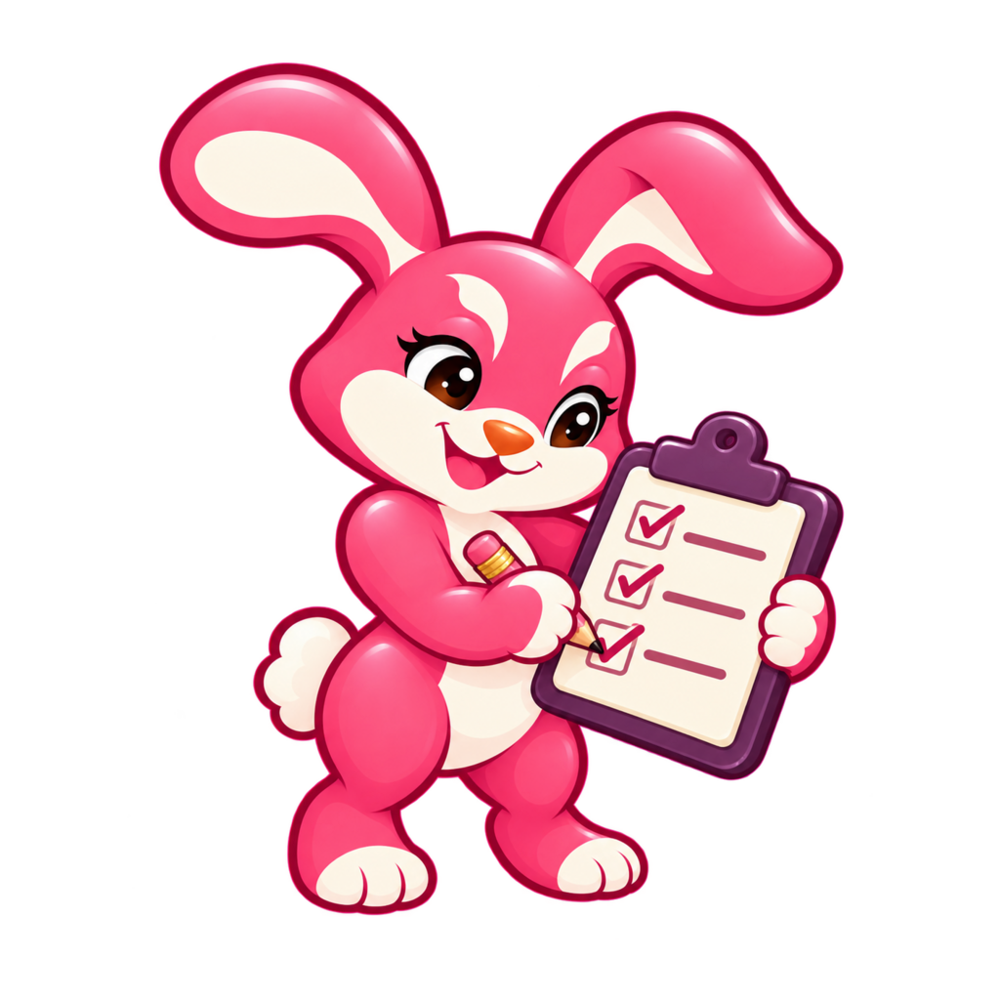

Account › About › Help & guides opens a sheet in the app instead of the website. Everything comes from a guide index built into the app at build time; searching makes no network request. Real guide copy, phone width (375px).
1 · About menu
2 · Opened: search + all guides
3 · Typing "bakup" (typo)
3 guides
4 · A guide, in the app
A backup doesn't have to be everything. Save just your routines to share with a friend, or just your preferences to set up a new phone.
Tap the person icon at the top right, then Your data, then Back up my data.
All three start checked, which saves a full backup. Uncheck what you want to leave out.
Tap Save backup. Keep the file somewhere off your phone.
5 · Nothing matches

No guide for that yetAsk us and we'll answer by email. Your question goes from your own email app.
Why A: the issue fixes most of the layout (results with an excerpt, the guide's text in the app, a website link at the end, Email support when empty). The only open choice was what shows before typing. Listing every guide by its website topic keeps the sheet useful with no query, and it doubles as the offline guides index. Considered and not drawn: a search box at the top of the Account menu (it would sit above everyone's settings), and an empty sheet until typing (a dead end for someone who doesn't know what to search for).